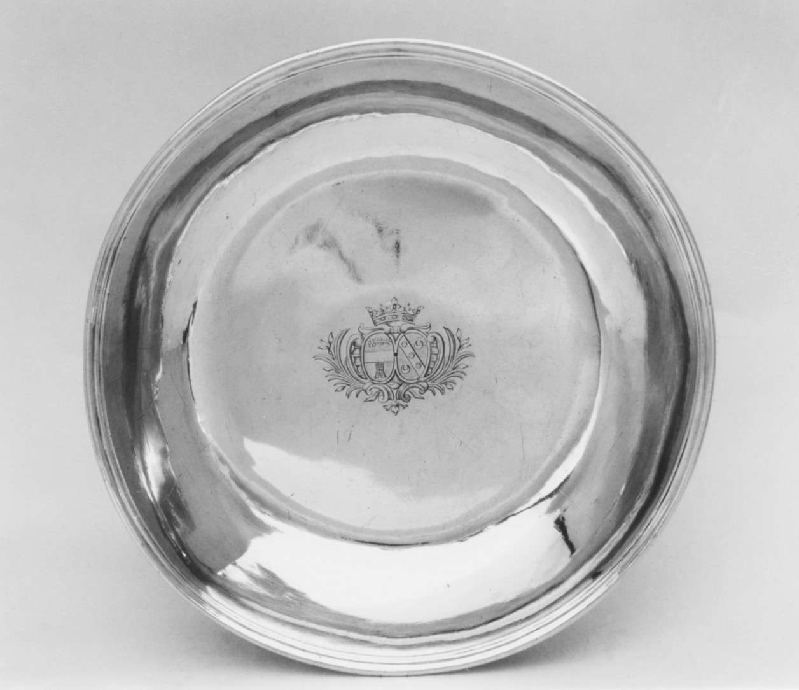
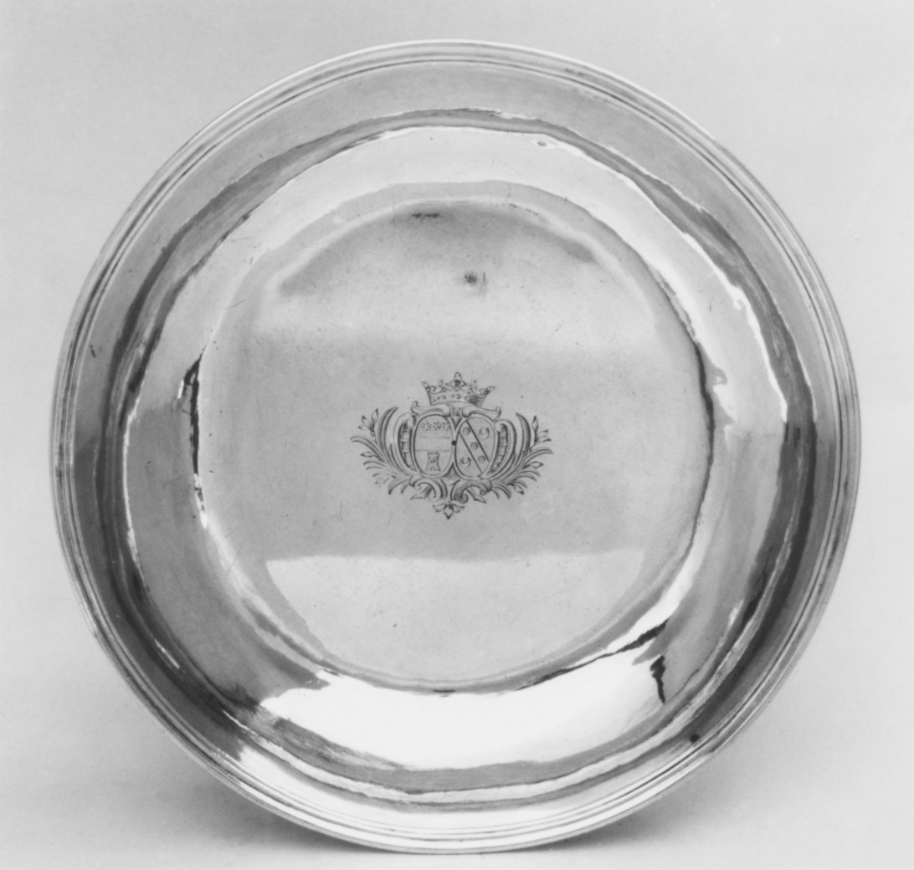
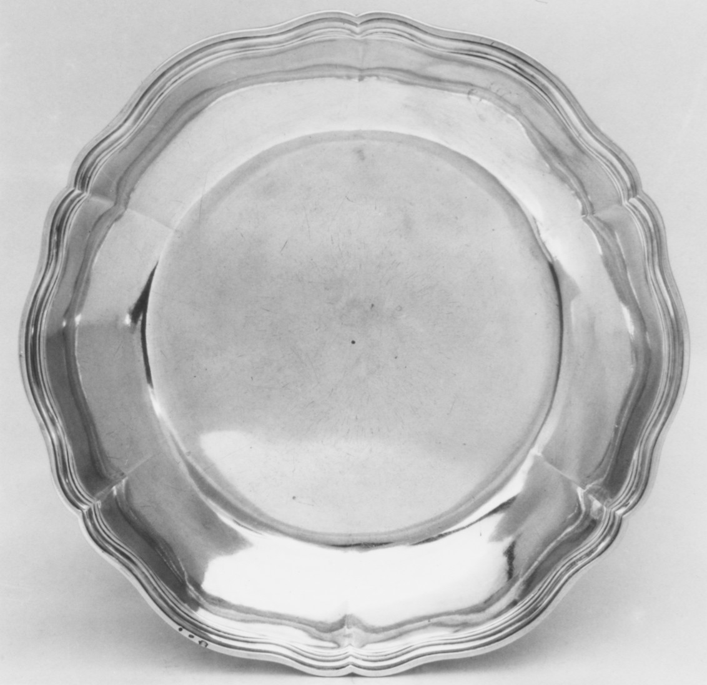

A size between
The photographs hold still. Their diameters return as circles beneath them.
The photos remain at a similar display size. The circles use a shared 30.2 cm maximum.

recorded diameter · circle scaled

recorded diameter · circle scaled

recorded diameter · circle scaled

recorded diameter · circle scaled

recorded diameter · circle scaled
These circles restate the second value in each record; they describe size. The pair readings remain my inference from the photographs and catalog fields. The two close image matches measure 29.8 and 30.2 cm across, and 22.2 and 22.9 cm. The last scalloped form sits between them at 25.4 cm. Its diameter separates it from both size clusters, while its rim keeps it in the wider scalloped family.
The second value is the recorded diameter; the first value, height, is omitted. Photos are uncropped and not to scale. Image order remains the shuffled order of Study 13. Source records, in image order: 48.187.169 / 48.187.172 / 48.187.170 / 48.187.173 / 48.187.171. Public Domain.